接上期：移动计算发展史（8）：从Pocket Computer到Palmtop PC——基于键盘的早期手持电脑
在 1990 年代中期，随着 Windows 95 在桌面端取得巨大成功，图形用户界面（GUI）逐渐取代了命令行的纯文本交互，成为个人电脑的标准操作方式。Palmtop PC也必然要经历这一转型。
对于采用翻盖和全键盘设计的掌上设备来说，引入图形界面面临着一个核心的输入设备问题：在没有足够空间容纳鼠标或触摸板的情况下，如何实现桌面上常见的“指点”和“点击”操作？
答案是触摸屏与手写笔。触控笔不仅可以精确点击微小的图标，还能直接在屏幕上进行批注和绘图，这奠定了后续数年间移动设备“实体键盘+手写笔”双输入的交互基础。
正是在这种思路下，微软在 1996 年底发布了精简版的操作系统 Windows CE 1.0，并为这类搭载键盘和触屏的翻盖设备制定了严格的硬件标准，将其统一命名为 Handheld PC（H/PC）。Windows CE几乎将桌面版 Windows 95 的用户界面一比一地微缩到了移动设备上，包括左下角的“开始”菜单、底部的任务栏以及桌面上的快捷图标，并预装了 Pocket Word 和 Pocket Excel。
1996年底，几大厂商与Windows CE 1.0共同开发的H/PC纷纷上市。
率先面世的是 1996 年底卡西欧推出的 Casio Cassiopeia A-10和A-11。它们的三围是 175 × 92 × 25 mm，重 380g。搭载了日立 SH-3 44 MHz 处理器，分别搭载2MB和4MB RAM，以及一块 480 × 240 分辨率的单色触控屏。该机器使用两节 5 号电池供电，上市售价分别是499和 599 美元。它们也在北美市场贴牌变成康柏PC Companion C120 / C140。
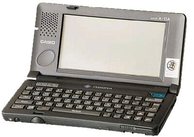
日本的第一大通信运营商DoCoMo当时推出了PHS通信卡，只要插到H/PC的PCMCIA 卡槽里面，就可以连接电话线数字拨号上网
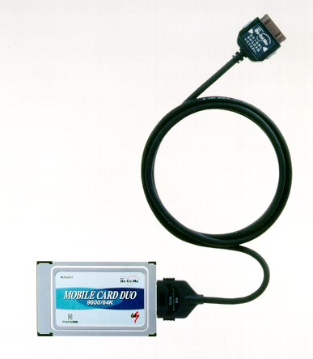
紧随其后，NEC 也在 1996 年底推出了 MobilePro 200。它的物理形态高度遵循了微软制定的 H/PC 参考设计，三围为 175 × 92 × 26 mm，重量约 380g，能够刚好放入西装内侧的口袋。配置方面，它搭载了自家生产的 MIPS 架构处理器 NEC VR4101（主频 33 MHz）和 2MB RAM，配备一块 480 × 240 分辨率、无背光支持触控的单色液晶屏。与同期的卡西欧 Cassiopeia 类似，它采用两节普通的 5 号电池供电，并在左侧提供了一个标准的 PCMCIA Type II 插槽，用于扩展存储卡或外接调制解调器。该机型上市起售价为 499 美元，是早期 H/PC 市场中中规中矩的基准设备。MobilePro后来与Cassiopeia一样，都在H/PC市场上极具影响力。
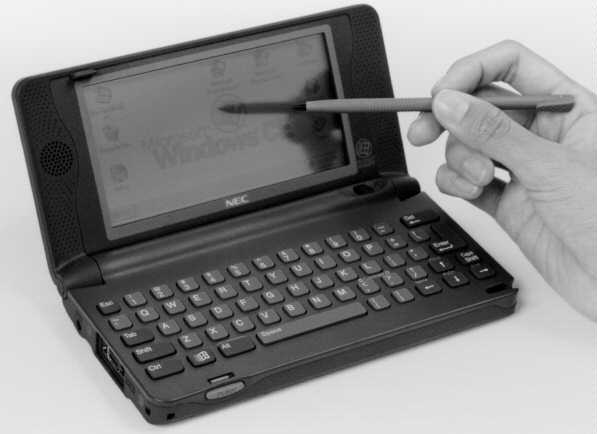
在 1996 年底发布的第一批 Windows CE 1.0 设备中，飞利浦推出的 Velo 1 展现出了与同类产品截然不同的硬件设计思路。它的机身尺寸为 171 × 95 × 25 mm，重量约 380g，搭载了主频 36.6 MHz 的 MIPS 架构处理器，标配 4MB RAM，配备一块 480 × 240 分辨率、支持触控的单色液晶屏。
Velo 1 最大的硬件特色在于其极高的通信集成度。在当时，掌上电脑若要接入网络，通常需要外接昂贵、巨大且耗电的 PCMCIA 拨号网卡。而飞利浦直接在 Velo 1 的主板上集成了一颗 19.2 Kbps 的低功耗调制解调器（Modem），并在机身侧面设计了一个巧妙的推拉式 RJ-11 电话线接口。这意味着商务用户在差旅中只需插上酒店的电话线，即可直接拨号收发电子邮件。
为了给内置 Modem 腾出主板空间并控制整体功耗，Velo 1 大胆地取消了当时被视为行业标配的 PCMCIA 扩展槽，转而采用体积更小的专有“V-Module”微型扩展槽来增加内存或闪存。此外，它的机身外部转轴处还配备了独立的物理按键和麦克风，允许用户在合上盖子的情况下直接录制语音备忘录。该机型上市售价约为 699 美元，凭借“开箱即用”的网络连接能力和以通信为核心的工业设计，在初代 H/PC 市场中树立了高端移动通信终端的标杆。
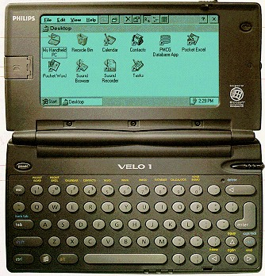
与此同时，欧洲厂商 Psion 也展示了另一种移动图形界面的解决方案。 1997年，Psion 推出了堪称工业设计经典的Psion Series 5。它的尺寸为 170 × 90 × 23 mm，重量仅为 354g。配置上，它搭载了 18 MHz 的 32 位 ARM7100 处理器和 8MB RAM，配备了一块 5.6 英寸、分辨率为 640 × 240 的支持触控的单色液晶屏。 Psion Series 5 最大的硬件亮点是其复杂的滑动式折叠键盘机构，在打开屏幕时，键盘会向前滑出并倾斜，在极小的机身内提供了极为优秀的打字手感。而在软件层面，它运行的是专门为移动设备开发的 EPOC32 图形操作系统（即后来 Symbian 塞班系统的前身），界面布局合理，触控笔操作直观，上市售价约 699 美元。
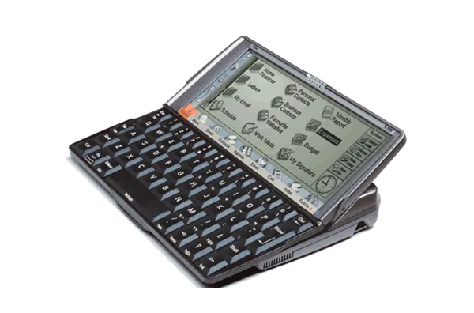
然而，掌握着桌面系统霸权的微软并没有忽视这一市场。
由于 480 × 240 的屏幕在显示 Excel 表格或 Windows 界面时过于局促，惠普在 1997 年迅速推出了屏幕更宽的 HP 300LX 及其高配版 HP 320LX。HP 300LX 的尺寸为 183 × 94 × 29 mm，重约 440g，搭载主频 44 MHz 的日立 SH-3 处理器和 2MB RAM。其最大的硬件突破，是率先将屏幕分辨率拉长到了 640 × 240（Half-VGA）的标准，这为后续所有的 H/PC 确立了宽屏比例的基础。虽然屏幕仍然只有5寸，比A-10/11的4.9寸没大多少，但显示桌面版网页和浏览文档要方便得多。HP 300LX 上市售价约 499 美元，但受限于成本，它的单色屏幕没有背光；而售价 699 美元的 HP 320LX 则将内存翻倍至 4MB，并加入了实用的屏幕背光功能。
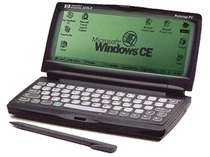
夏普也推出了其首批搭载 Windows CE 的双子星——Mobilon HC-4100 与 HC-4500。这两款机型采用了相同的模具设计（三围约为 186 × 94 × 26 mm），均搭载了基于 MIPS 架构的 74 MHz 处理器。其中HC-4500也是第一款彩屏H/PC。夏普专门为该系列发售了一款型号为 CE-AG04 的 PCMCIA 扩展卡——它本质上是一个微型数码相机模块。将它插入 HC-4500 的扩展槽后，用户就可以直接在彩色屏幕上取景并拍摄相片。用户可以当场用 Windows CE 内置的图像软件裁剪、修图，然后插上电话线，通过内置的 33.6 Kbps 调制解调器把带有照片的邮件直接发给客户。
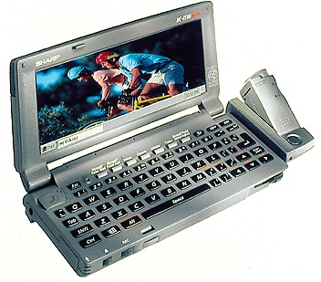
就像Subnotebook市场由日本厂商主导一样，H/PC也在日本最为流行。日本大量上班族使用电车（地铁化运营的通勤火车）通勤，H/PC非常便携，可以塞进裤子口袋，又是手持操作，很适合拥挤的空间站立使用。1997年和1998年，另外两个日本电子巨头日立和富士通也分别推出了Persona和INTERtop手持电脑。
Persona的前两代都还是DOS系统。
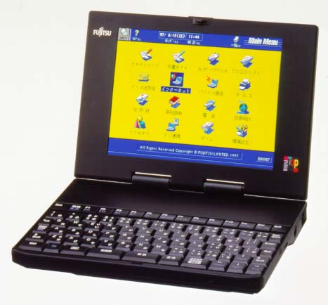
日立Persona系列首发的HPW-10JE主打女性市场，彩壳设计十分时尚。
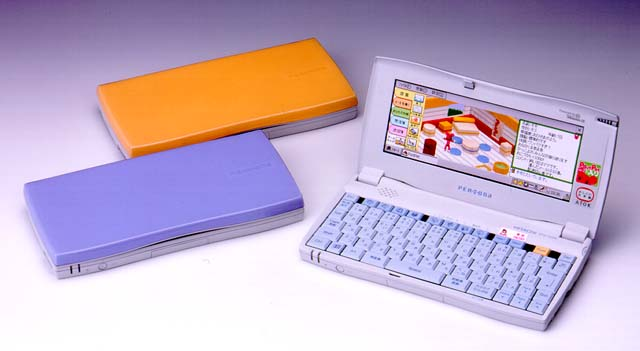
尽管如此，在不到 6 英寸的单色屏幕上，早期 Windows CE 的滚动条和关闭按钮变得极其微小，用户必须非常专注地用触控笔去“瞄准”才能完成点击，操作效率甚至不如纯键盘的 DOS 掌上电脑。
为了改善键盘录入体验和屏幕视野，一部分 Handheld PC 开始向更大的尺寸妥协，逐渐偏离了“手持”和“口袋”的初衷。
在这个方向上，惠普在 1998 年推出的 Jornada 820 是一个极具代表性的例子。它的三围大幅膨胀到了 246 × 178 × 33 mm，重量高达 1.1kg，在物理形态上已经完全是一台微型笔记本。它搭载了 190 MHz 的 Intel StrongARM 处理器和 16MB RAM，配备了一块 8.2 英寸的 VGA（640 × 480 分辨率）彩色屏幕，上市售价约 999 美元。
为了向传统笔记本的输入体验看齐，Jornada 820 彻底放弃了触摸屏和手写笔，转而在键盘下方配备了触控板。虽然更大的尺寸换来了接近全尺寸笔记本 90% 键距的舒适键盘，但它已经无法放进任何常规的口袋中，形态上更接近于一台Subnotebook。
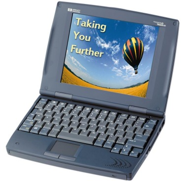
1999 年面世的Vadem Clio最引人瞩目的是其被称为“SwingTop”的金属臂转轴设计。它配备了一块 9.4 英寸、VGA 分辨率的彩色触控屏。凭借独特的铰链机构，这块屏幕不仅可以像传统笔记本一样开合，还能在框架内进行 180 度翻转。这使得它可以作为标准的翻盖 H/PC 使用，也可以将屏幕反向折叠平铺在键盘上方，变身为一台纯触控的平板电脑，或者反折呈现“帐篷式”的展示模式。
它的三围尺寸达到了 287 × 222 × 25 mm，重量约为 1.45kg。配置方面，它搭载了主频 69 MHz 的 NEC VR4111 处理器和 16MB RAM，运行 Windows CE H/PC Pro（基于 CE 2.11 内核）系统。该机型上市售价约 999 美元，虽然重量和尺寸已经超出了普通掌上设备的范畴，但这种多形态自由切换的设计，极大地拓宽了 H/PC 在教育演示和现场信息采集场景中的应用。
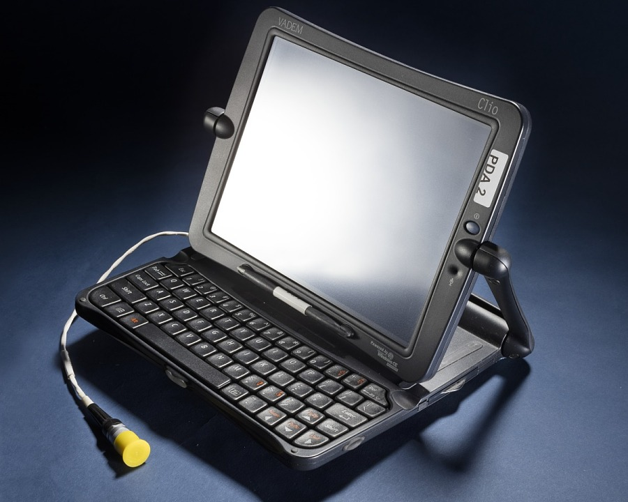
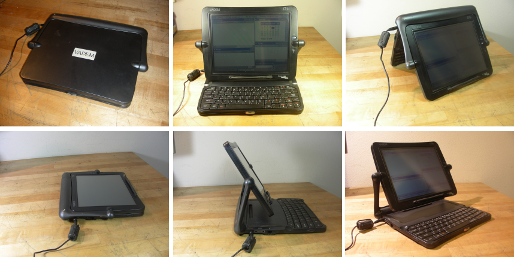
同年，IBM 推出的 WorkPad z50更加极端——它就是一台运行 Windows CE 系统的ThinkPad。它的机身尺寸为 259 × 203 × 30 mm，重量约 1.2kg。硬件上，它搭载了主频 131 MHz 的 NEC VR4121 处理器，标配 16MB RAM（可扩展），同样配备了一块 8.2 英寸的 VGA 彩色触控屏。
作为 IBM 的商务移动终端，WorkPad z50 最大的卖点在于其无可挑剔的文字输入体验：它配备了键距达到 18mm 的高品质键盘，手感几乎与全尺寸的 ThinkPad 笔记本无异。更重要的是，它在键盘中央标志性地集成了 IBM 引以为傲的“指点杆（TrackPoint）”，配合键盘下方的左右按键，使得用户在进行大量文字处理时，可以完全双手不离键盘，极大地减少了频繁拔出手写笔去点击屏幕的繁琐操作。该机型上市售价同样在 999 美元左右，其产品逻辑完全是为了满足重度文本录入的商务人群，但在尺寸和重量上，它其实已经很难算是H/PC
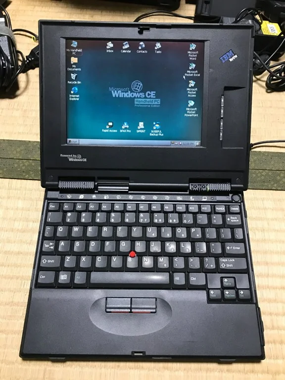
日本市场的H/PC的大屏路线没有那么极端。相对平衡了便携性和更好的显示效果。
NEC在1998年推出的MobilePro 750上开始采用大屏。它的尺寸扩大到了 246 × 128 × 26 mm，重量达到了850g。配置上，它搭载了主频 180MHz 的 MIPS 架构处理器（NEC VR4111）和 160MB RAM，屏幕采用了一块 8.1 英寸、分辨率 640 × 240 的半高宽屏（Half-VGA），并且支持彩色显示。配置可以说相当高。
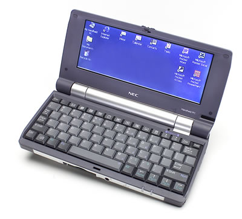
夏普在 1999 年 10 月推出的Telios 系列则一改H/PC主打商务用途的传统。首发的两款机型——Sharp HC-VJ1 和 HC-AJ1均搭载了主频 122 MHz 的东芝 TX3922 处理器和 32MB RAM，运行 Windows CE, Handheld PC Professional Edition 3.0 系统。均配备了一块 7.1 英寸、分辨率高达 800 × 480（Wide-VGA）的彩色 TFT 触控屏，这在当时的便携设备中属于极高的规格。
这两款兄弟机型在多媒体路线上有着明确的分工。主打影像记录的 HC-VJ1 在屏幕右侧边框内置了一枚 35 万像素的旋转 CMOS 摄像头，系统内部固化了专门的 MPEG-4 视频录制和编辑软件，允许用户直接拍摄视频并将其作为邮件附件发送。由于增加了摄像头模组，HC-VJ1 的尺寸达到了 212 × 142 × 30 mm，重量约为 840g，上市售价约 1000 美元。
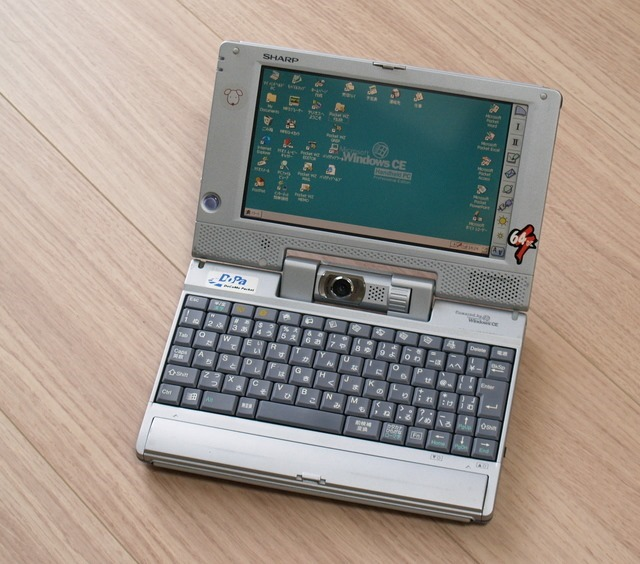
而另一款 HC-AJ1 则取消了摄像头，主要聚焦于音频体验。它内置了专用的 MP3 播放软件和更便捷的互联网快捷键，适合网页浏览与音乐播放。去除了摄像头模组后，其机身厚度略微缩减至 28.5 mm，重量降至 790g，售价也相应降低。尽管这两款机型在物理形态上已经超出了口袋的范畴，但它们代表了早期 H/PC 试图向多媒体娱乐和视听通信终端演进的重要尝试。
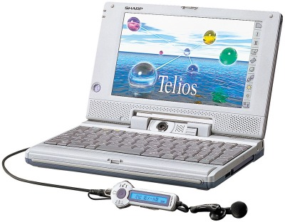
1999年，日本H/PC的销量达到了历史巅峰，年销量在40-50万台左右，超过了当时人口两倍以上的美国。
反而是大屏化始作俑者的惠普后来却回归了便携路线。
1998 年底推出的 Jornada 680，作为 HP 200LX 的精神继任者，它在 189 × 95 × 34 mm 的尺寸内，塞入了一块 6.5 英寸的彩色触控屏，还只重 510g，非常好的保持了便携性。它搭载日立 SH-3 133 MHz 处理器和 16MB RAM，内置 56k 调制解调器，售价约 899 美元。
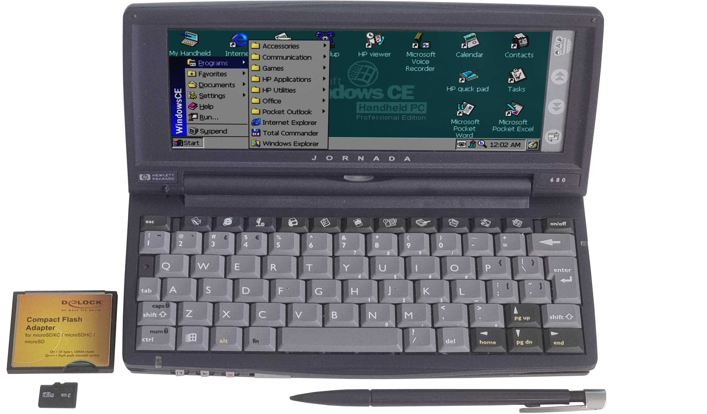
在 2000 年推出的 Jornada 720可以说代表了H/PC的成熟巅峰。 Jornada 720 的三围控制在 189 × 95 × 34 mm，重量 510g。它搭载了性能强悍的 Intel StrongARM 206 MHz 处理器，32MB RAM，以及一块 6.5 英寸 640 × 240 分辨率的高质量彩色触控屏，内置 56K 调制解调器，并保留了 PCMCIA 和 CF 扩展插槽。它运行更新后的 Windows CE 3.0 系统，响应速度和界面优化都有所改善。该机器上市售价 999 美元，凭借出色的做工和均衡的性能，成为了当时最高端的移动办公终端之一。
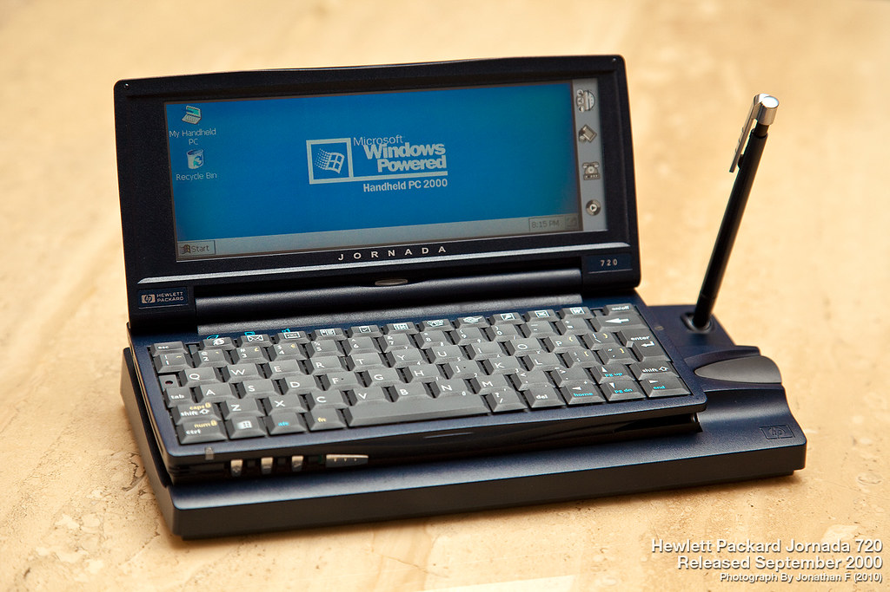
随着 2000 年后移动计算市场进一步细分，H/PC 陷入了定位上的困局： 对于追求极致便携的用户来说，去掉了实体键盘、纯靠屏幕触控的 Pocket PC和 Palm PDA 体积更小，真正做到了“单手握持”；如果要简单上网浏览，早期智能手机又比H/PC方便得多；而对于需要进行大量文字输入和复杂办公的用户来说，随着硬件的成本下降和进一步轻便化，运行完整 Windows 系统的Subnotebook、UMPC和上网本在实用性上远胜于只能运行精简版 CE 系统的 H/PC。
作为一种过渡形态，保留了传统物理键盘并引入桌面级图形界面和触控操作的 Handheld PC 最终退出了主流市场。
系列文章：